传输层的功能
- 传输层提供端到端的通信；也提供面向连接和无连接的两种服务。
- 也有观点认为，网络层提供的并不是真正的端到端（即，进程到进程）的服务，而只是主机到主机的服务，因为它并没有办法找到目标的进程。
但传输层通过端口来标识应用进程，从而真正实现进程之间的通信。
在网络层已经有了面向连接和无连接的两种通信方式的情况下，为什么传输层还要提供这两种服务呢？
- 因为网络层提供的服务更多是由 ISP 决定的；主要运行在路由器上
- 但传输层的代码运行在用户自己的机器上，因此用户可以在这一层选择协议来提高网络的服务质量。
传输层是面向通信部分的最高层，起着承上启下的作用。每个传输服务会给用户提供一组接口，用户（或者说应用）只需要调用这些接口就能调用相应的功能了。传输服务之于网络服务就像编程语言之于汇编语言：当切换不同的网络服务时，只需要切换一种传输服务到网络服务的库就好了；就像在新的架构上运行原来的 C 语言程序时，只需要换一个编译器就好。同时，网络服务就像汇编语言一样被用的比较少；但传输服务就像高级语言一样会被很多程序员使用。因此，传输服务的接口一定要更加方便、简单。
怎么实现端到端的通信呢？SAP: Service Access Point. Transport SAP 即 Port，用来指定进程，有 16bit，可以表示 65536 个不同的端口号。
传输层传输的单位称为 segment。
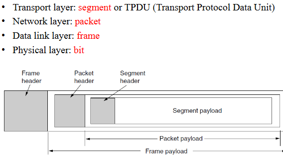
UDP
UDP, User Datagram Protocol 是一个无连接的非可靠传输层协议。
它在 IP 之上只提供 2 个附加服务：
- 多路复用
- 对数据的错误检查（IP 只检查头部的错误）。
它不进行流量控制、拥塞控制和重传，所有维护可靠性的工作由应用层完成；它只是提供一个与 IP 协议的接口。
-
UDP length 是包含 UDP Header (8 Bytes) 和数据在内的总字节数。最小是 8，即只有头部；最大是 65515，这是 IP 的限制。
-
UDP checksum 是可选的；如果不想检查就写全 0。其算法与 IP checksum 类似，具体参与运算的包含一个 12 Bytes 的 IPv4 pseudoheader、UDP checksum 暂时置零的 UDP header 以及数据部分。
- 如果数据部分的长度不是 16 bits 的整倍数，则在末尾补 0 用于计算；但补的 0 不会被发送出去。
-

- 首部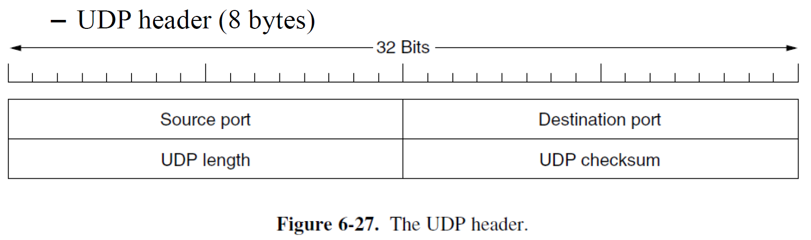
- 伪首部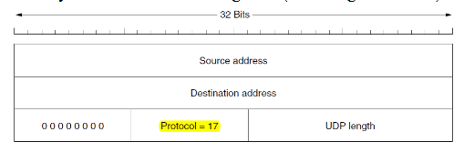
-
其中，IPv4 pseudoheader 中的长度是和 UDP header 中的长度一致的。同时也可以看到，UDP 在计算时是用到了发送方和接收方的 IPv4 地址的；这有违分层原则。当然，pseudoheader 也有对应的 IPv6 版本。
UDP 适合一次性传输较少数据的网络应用，也适合那些可靠性不那么重要但不能容忍延迟的应用。
- DNS域名系统
- SSDP简单服务发现协议
RTP 实时传输协议[不怎么考]
- RFC3550
- 它是一种传输协议，只是碰巧在应用层实现
- 以数据包形式传输音频和视频
- 将多个实时数据流复用到单个 UDP 数据包流中。UDP 流可以发送到单个目的地（单播）或多个目的地（多播）。
- 接收方在正确的时间播放音频和视频
- 以数据包形式传输音频和视频
- 不保证传递，数据包可能会丢失、延迟、损坏等。RTP 流中发送的每个数据包的编号都比其前驱数据包高一个
- 目的地确定有数据包丢失,可以跳过（视频帧）或插值（音频数据）[没有确认机制]
- 每个 RTP 负载可能包含多个样本，它们可以按应用程序需要的任何方式进行编码。提供一个头字段来指定编码方.
- 为每个数据包中的第一个样本关联一个时间戳。这个机制允许目的端进行少量缓冲，并在流开始后的正确毫秒数后播放每个样本。
- 减少网络延迟变化的影响
- 同步多个流
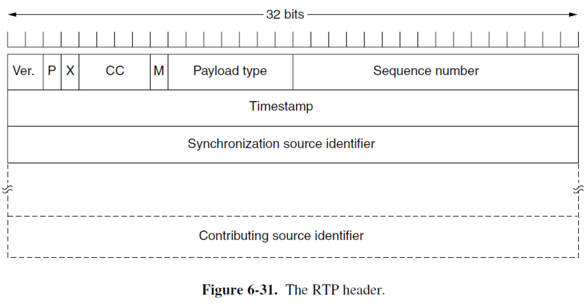
- 3个32bits 以及一些可能的扩展
RTCP 实时传输控制协议
RTP的配套协议
- 用于处理反馈\同步和用户界面
- 不传输任何媒体样本
TCP
TCP, Transmission Control Protocol 是为了在不可靠的 IP 层上实现可靠端到端传输设计的。
它是面向连接的，且只支持一对一的通信（而 UDP 支持一对多、多对一、多对多），提供全双工点到点通信，解决传输的可靠、有序、无丢失、不重复。
- TCP 是面向字节流的，而 UDP 是面向报文的。这就是说，UDP Segment 的长度由应用程序传来的数据决定，而 TCP 只将应用程序传来的数据视为无结构的字节流，segment 的长度由协议动态决定。
- 设计宗旨是动态适应互联网的特性[差异很大的拓扑、带宽、延迟、数据包大小和其他参数]，并在面对多种故障时具有强大的鲁棒性。
主要的:RFC2018/2581/3168
基本TCP协议:具有动态窗口大小的滑动窗口协议
TCP 服务是由发送方和接收方创建的端点（称为sockets）获得的。
- Each socket has a socket number (address) consisting of
the IP addressing of the host and a 16-bit number local to
that host, called a port
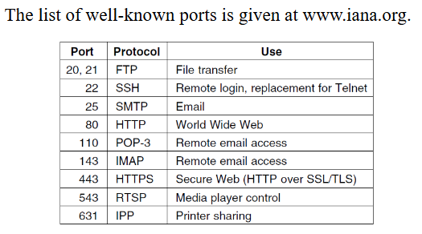 - Connections are identified by the socket identifiers at both
ends, that is, (socket1, socket2)
TCP Segment
限制segent大小的两个条件
- 每个段包括头部必须适配65515字节ip负载(65535-20IP头)
- 每个链路都有一个MTU最大传输单元
TCP 的一个关键特性，也是主导该协议设计的特性，是 TCP 连接上的每个字节都有自己的 32 位序列号。
- 序列号空间是基于字节的，而不是基于段的
- 没有任何数据的段是合法的，通常用于确认和控制消息。

- source port和destination port 连接识别器是一个五元组,包括协议[TCP]\源ip\源端口\目的ip\目的端口
- Sequence number - 4B
- TCP 是面向字节流的，因此它的 seq# 是以字节计数的。例如一个 segment 的 seq# 是 301，数据长度是 100B，那么这个 segment 就包含了第 301~400 个字节，下一个 segment 的 seq# 就是 401。
- Ack number - 4B
- 期望收到的下一个 segment 的 seq#。例如收到了上面说的那个 segment，那发回去的 segment 的 ack# 就应该是 401。
- 是一个cumulatie acknowledgement累积确认,因为用一个数字概括了接收到的数据
- Carries highest in-order sequence number
- Normally a steady advance
- TCP header length - 4bits
- 以 32 bits / 4 Bytes 计数。由于 header 有变长的 offset 字段，因此 header 的长度也是可变的。这一字段也被称作 data offset，因为它作为 header 的长度同时也表示了 segment 中的数据是从哪里开始的；这个 offset 与 IP datagram fragments 中的 offset 不一样。[里面是字的length 比如8字,实际上就是8*4=32Bytes]
- Reserved - 4bits
- 设计时用于在发现协议出现设计问题后补充使用；本来有 6 位，只用掉了 2 位，说明设计的不错。目前应当置 0。
- CWR, Congestion Window Reduced; ECE - Explicit Congestion Notification Echo：
- 当 TCP 接收端得知网络拥塞[表现为丢包]后，就设置 ECN-Echo (ECE) 从而显式告知发送端网络拥塞，需要放慢发送速率；
- 当 TCP 发送端收到 ECE 后就设置 CWR 从而告诉接收端已经放慢速率了，不需要再发 ECE 了[一直发送直到接收到CWR已被设置为止]。
- URG, URGent bit。
- 可以看到后面还有一个 16 bits 的 Urgent pointer 字段，只有在 URG = 1 时该字段才有效。此时表示该 segment 中有紧急数据，紧急指针用于指示从当前序列号[字节流]开始的字节偏移量，紧急数据位于该位置范围。
- 例如，假设当前序列号为 1000，如果紧急指针=10，那么此字节流中紧急数据的端点是 1000+10=1010
- 当紧急数据在目的地被接收时，接收应用程序会被中断，以便它可以停止正在进行的任何操作，读取数据流以查找紧急数据。
- 紧急数据的结尾被标记，以便应用程序知道何时结束。紧急数据的开始没有被标记。应用程序需要自己判断。
- 可以看到后面还有一个 16 bits 的 Urgent pointer 字段，只有在 URG = 1 时该字段才有效。此时表示该 segment 中有紧急数据，紧急指针用于指示从当前序列号[字节流]开始的字节偏移量，紧急数据位于该位置范围。
- ACK。
- ACK = 1 时 ack# 字段才有效,=0时确认字号字段会被忽略。TCP 规定建立连接后所有 segment 的 ACK 都是 1。
- PSH, push。
- PSH = 1 表示接收端在接收到 segment 后应当尽快交付给应用程序，而并不是等到缓冲区满后再向上交付。
- RST, reset。
- RST = 1 表示 TCP 连接中发生严重差错，例如主机崩溃等，需要重置连接。也用于拒绝无效段或拒绝尝试建立连接
- SYN, synchronize。
- SYN = 1 表示这是一个连接请求或者连接接受 segment。
- SYN = 1, ACK = 0[表示32位ack没有意义] 说明这是一个连接request segment
- SYN = 1, ACK = 1 说明这是一个连接reply segment。
- SYN = 1 表示这是一个连接请求或者连接接受 segment。
- FIN, finish。
- FIN = 1 表示发送方数据已经发送完毕，要求释放传输连接。SYN和FIN的segment都会有序列号,因此能够保证以正确的顺序进行处理
- Window size，2 Byte
- 表示允许对方发送的数据量（TCP 是全双工的）。例如 ack# 是 701，window size 是 1000，就说明允许对方发送 701~1700 这些字节。
- Window size 可以为 0，表示现在不想要；
- 之后想要恢复时只需要发送一个同样 ack# 但是 window size 不为 0 的 segment 就行了。
- 表示允许对方发送的数据量（TCP 是全双工的）。例如 ack# 是 701，window size 是 1000，就说明允许对方发送 701~1700 这些字节。
- Checksum，2 Byte，计算方法和 UDP 的一样对报头、数据和概念上的伪报头进行校验，只是需要把 UDP 协议号 17 改为 TCP 协议号 6,且校验和是强制性的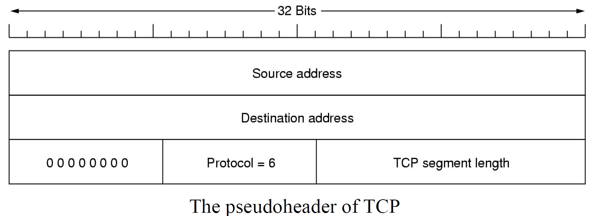
- Options，0~40 Bytes，选项长度可变，最长可扩展到 40 字节以容纳可以指定的最长 TCP 头.
- 必须是 4 Bytes 的倍数，不足的用 0 补充。
- 允许主机规定 MSS, Maximum Segment Size，即允许对方发来的 TCP segment 中 数据 部分的最大长度。否则默认为536字节的负载,即536+20的TCPsegment
- window scale option允许发送方和接收方在连接开始时协商window scale factor
- timestamp option 携带由发送方发送并由接收方回显的时间戳
- sack 选择性确认选项 补充序号确认
TCP Connection
example

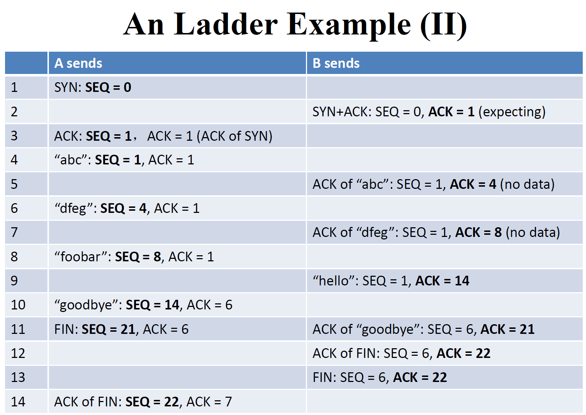
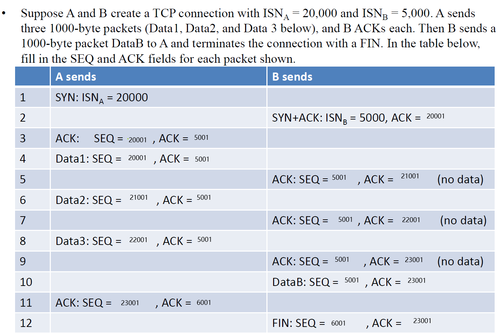
- 注意seq跟字节流序列号有关,seq代表的起始字符也要包括进去.如果发送的是nodata的
- 开头的syn segment是占seq的
Establishment
- 三次握手其实就是双方交换 ISN 的过程

- 过程

- SYN segment 不能携带数据,只有报头（即前两次握手），但是要消耗掉 1 个 seq,以便于明确地被确认。
- request 客户端向服务器发送请求段
- 初始序列号[每个主机选择的初始序列号会循环使用但是周期很长.这个规则是为了防止延迟的重复数据包]
- 因为是每个主机单独生成的所以两边的序列号没有任何关系
- syn位为1 指示该segment包含客户端使用的初始序列号
- 最大段大小:包含在option字段中 [最大数据块限制]
- 接收窗口大小:包含在窗口大小字段中[未确认数据限制]
- 初始序列号[每个主机选择的初始序列号会循环使用但是周期很长.这个规则是为了防止延迟的重复数据包]
- reply 服务器发送应答段来响应客户端
- 前四条同上
- 确认号,客户端发送的request段中的初始序列号+1作为序列号,表示服务器期望从客户端接收的下一个数据字节的序列号
- ack位置1 向客户端标名当前段中的确认号字段是有效的
- request 客户端向服务器发送请求段
- 接收reply段之后
- 通过发送纯确认来确认服务器的响应[不必要,因为如果客户端立即发送数据包,那么就视为已经被确认,全双工连接已建立,所以其实实际上必要的是2次握手]
- 对于除请求段以外的所有段,ack位始终置为1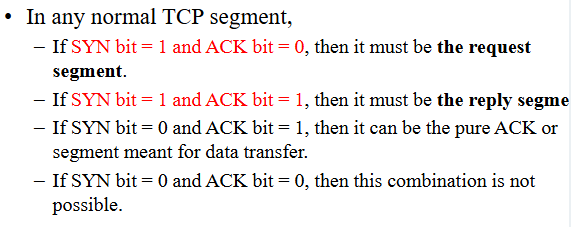
SYN flood attack
- 由于服务端在第 2 次握手时分配了资源，因此有可能受到 SYN 泛洪攻击
- [发reply包的时候需要记住自己发出去的seq,以便于后面检查ack是否等于seq+1.]因此恶意发送者可以通过发送一连串 SYN 段并且从不完成连接来占用主机上的资源
- 解决办法:用SYN cookies 通过加密算法,用自身的一些信息生成序列号.那么序列号+1被返回的时候,就可以通过相同的加密算法生成正确的序列号再来对比.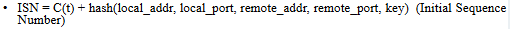
- [发reply包的时候需要记住自己发出去的seq,以便于后面检查ack是否等于seq+1.]因此恶意发送者可以通过发送一连串 SYN 段并且从不完成连接来占用主机上的资源
如何寻找相关字段
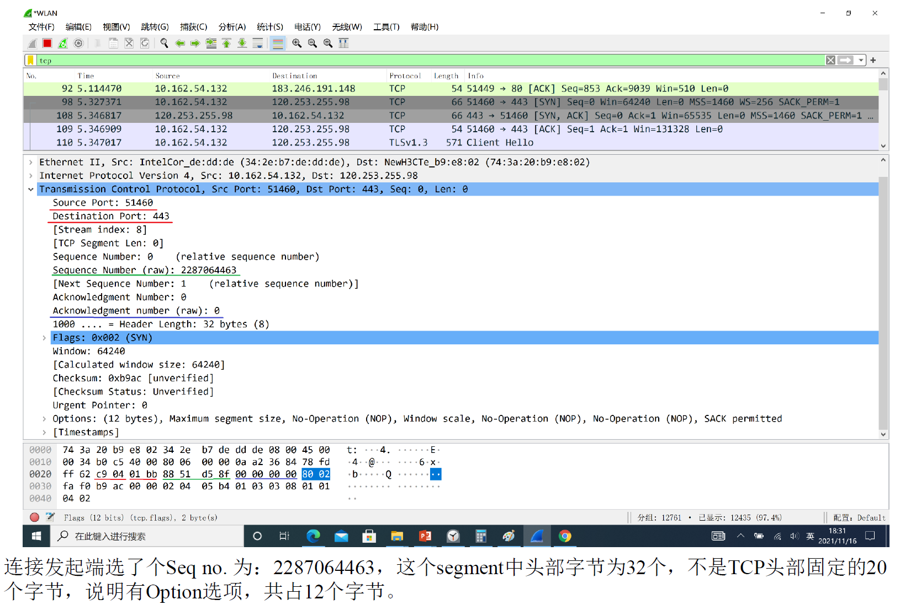
-
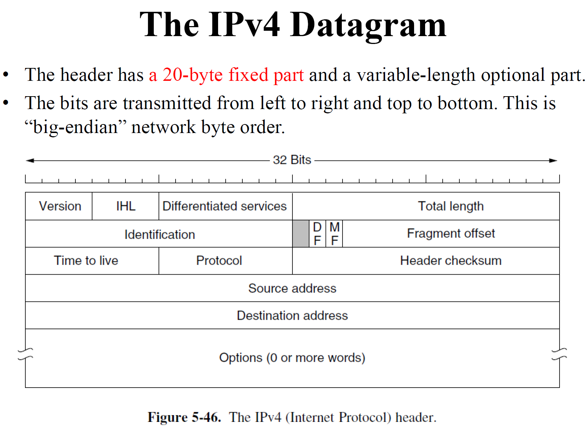在wireshark里可以找到ip头的totallength为34→换算10进制52=ip头20 tcp头32 待解决
- 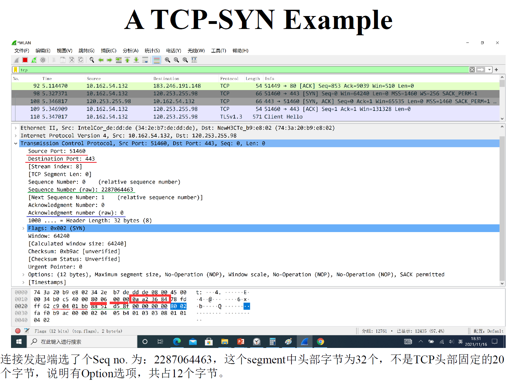
-

-

Release

- 2-army problem：理论上无法保证一定能成功释放连接。
- 假设客户端和服务端之间已经建立了良好的TCP连接,客户端想要终止连接
- 为了终止连接
- 客户端向服务单发送FIN segment FIN位设为1
- 客户端进入FIN_WAIT_1状态
- 客户端等待来自服务端的确认
- 接收到FIN segment之后
- 服务器释放其接收缓冲区
- 服务端向客户端发送确认
- 服务器进入CLOSE_WAIT状态
- 客户端收到确认后进入FIN_WAIT_2状态
- 客户端到服务端的连接已终止,即单向连接已关闭
- 由于服务器缓冲区已释放,客户端无法向服务器发送人恩赫数据
- 仍然可以从客户端向服务器发送纯确认(无数据)
- 服务器到客户端的连接仍然打开,服务器可以向客户端发送数据和确认信息
- 服务器想要关闭与客户端的连接
- 服务器向客户端发送一个FIN segment
- 等待确认
- 接收到FIN segment之后
- 客户端释放其接收缓冲区
- 客户端向服务器发送纯确认(不必须)
- 客户端进入TIME_WAIT状态
- 允许客户端在最终的确认丢失时重新发送,等待结束后,连接就被正式关闭
- 为了终止连接
建模
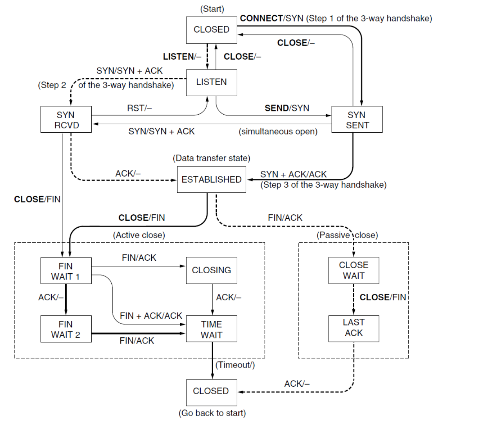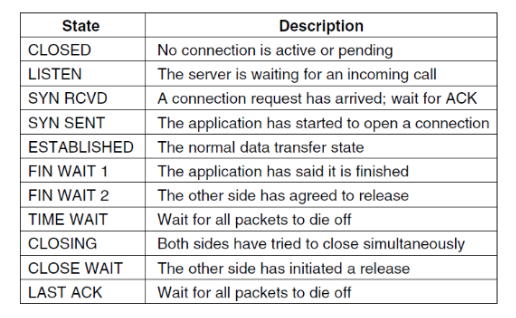
- TCP connection management finite state machine. The heavy solid line is the normal path for a client. The heavy dashed line is the normal path for a server. The light lines are unusual events. Each transition is labeled with the event causing it and the action resulting from it, separated by a slash.
可靠传输机制
TCP Timer Management
RTO
- 超时重传theRTO。TCP 发送方维护一个 Time-Out Timer，如果超过超时重传时间 RTO, Retransmission Time-Out 就重新发送这个 segment。值得讨论的问题是 RTO 的设置，TCP 面临着一个根本不同的环境。TCP 确认返回所需时间的概率分布更大且更具变异性,因此RTO的设置和传输层的不同。
- [使用动态算法，根据对网络性能的持续测量，不断调整超时间隔.]这里的算法要用基本四则运算,可以用移位寄存器进行实现,很效率.
- 先算一个SRTT,用历史值和当前值做一个线性加权和,做一个估计的smoothRTT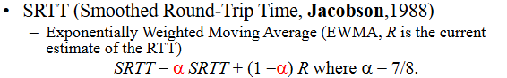
- 再算一个RTTVAR叫往返时间变异,用RTTVAR和SRTT算一个RTO,然后把这个RTO和1sec取最小值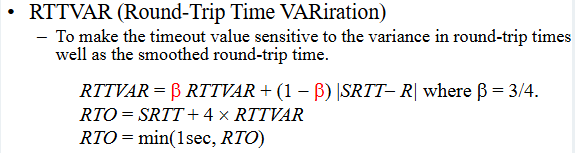
- karn算法: 不对任何已被重传的segments更新估计值.此外,每次连续重传的时候超时时间都会加倍直到第一次成功通过为止
- [使用动态算法，根据对网络性能的持续测量，不断调整超时间隔.]这里的算法要用基本四则运算,可以用移位寄存器进行实现,很效率.
the persistent timer
接收方发送一个窗口大小为 0 的确认，告诉发送方等待。之后，接收方更新窗口，但是包含更新的数据包丢失了。现在发送方和接收方各自等待对方做些什么。
- 当持久计时器超时时，发送方向接收方发送一个探测。对探测的响应给出窗口大小。
- 如果仍然为0,再次设置持久计时器
- 如果非零就可以发送数据
the keepalive timer
当连接长时间空闲时，保活计时器可能会触发，使一方检查另一方是否仍然存在
the TIMEWAIT timer
在关闭时的timewait状态中使用.运行的时间是 twice the maximum packet lifetime,以确保当连接关闭时,创建的所有数据包都已经消失
流量控制/滑动窗口
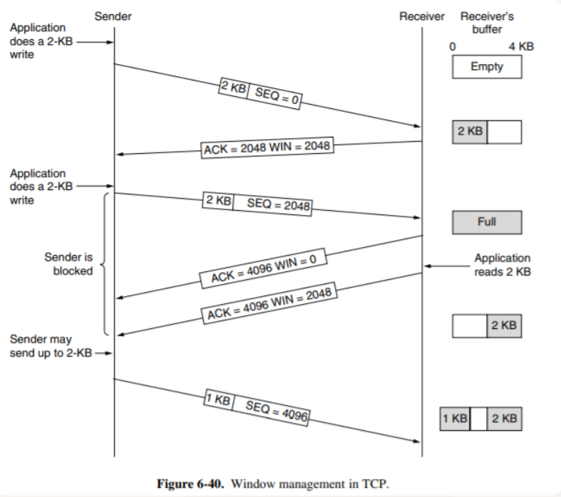

- 窗口探测使用的计时器是 persistence timer。
The Silly Window Syndrome
当数据以大块形式传递给发送 TCP 实体，但接收端的交互式应用程序每次只读取 1 个字节时，就会出现此问题
-
Nagle’s Algorithm
- 减少接收方对网络造成的负载
- 减少发送多个短数据包的发送方使用的带宽
- 发一块并缓冲其余所有数据,直到第一块被确认之后,在一个tcp段中发送所有缓冲数据,并开始缓冲直到下一个段被确认
- 但是不适合交互式游戏而且可能会和延迟确认相互作用导致死锁
-
Clark’s Solution
- 强制接收器等待，直到有足够的可用空间，然后通告该空间
这两种解决方案都是有效的，可以一起使用。目标是使发送方不发送小段，接收方也不请求小段。
- 强制接收器等待，直到有足够的可用空间，然后通告该空间
乱序到达问题
- 接收方将缓冲数据，直到能够按顺序将其传递给应用层。
- 只有当已收到确认字节之前的所有数据时，才能发送确认[cumulative acknowledgement累积确认]
- 如果接收方收到segments0124567,可以确认sement2中最后一个字节及其之前的所有内容.
- 当发送方timesout之后,会重新传输段3.因为接收方已经缓冲了4~7,所以收到3之后,它可以确认分段7末尾的所有字节.
拥塞控制
-
网络层在路由器队列增长过大时检测到拥塞，并尝试对其进行管理，至少通过丢弃数据包来管理。
-
传输层负责从网络层接收拥塞反馈，并减慢其向网络发送的流量速率。
- 在互联网中，TCP 在控制拥塞以及可靠传输中都扮演主要角色。
-
TCP 拥塞控制基于 AIMD (Additive Increase Multiplicative Decrease) 控制律使用窗口机制，以packet loss作为二进制信号。
-
TCP 维护一个拥塞窗口congestion window (the sending window）和一个流量控制窗口（接收窗口）
- 拥塞窗口（发送窗口）的大小是指发送者在任何时刻可以在网络中传输的字节数。
- 拥塞窗口仅为发送者所知，不通过链路传输。
- The corresponding rate 是窗口大小(两个窗口取最小) 除以连接的往返时间。
- TCP 根据 AIMD 规则调整拥塞窗口的大小
- 流量控制窗口(接收窗口)
- 指定接收器可以缓冲的字节数。接收器通过 TCP 头向发送器指示其窗口大小(window size)。
- 两个窗口并行跟踪，可以发送的字节数是两个窗口中较小的那个。换句话说，发送器处未确认数据的数量 ≤ min(接收器窗口大小，拥塞窗口大小)
- 如果拥塞窗口或流量控制窗口暂时满了，TCP 将停止发送数据。
- 所有互联网 TCP 算法都假设丢包是由拥塞引起的，并通过监测超时来判断。但是，使用丢包作为拥塞信号取决于传输错误相对较少
- 对于无线传输链路来说,通常不成立,丢包一般是传输错误导致的
- 大多数电线和光纤的比特错误率较低
- 拥塞窗口（发送窗口）的大小是指发送者在任何时刻可以在网络中传输的字节数。
-
两个重要问题
- 发送方将使用的数据包传输速率
- Ack clock to estimate RTT
- 拥塞窗口的大小so that we can take the most advantage of the network path while at the same time will not induce clog quickly
- slow start
- 发送方将使用的数据包传输速率
Ack clock
确认返回到发送方的速率大约与数据包能够在路径中最慢链路上发送的速率相同[就是最瓶颈的那一段]。这正好是发送方想要使用的速率。
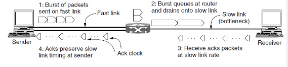
慢开始和拥塞避免
整个思想是让 TCP 连接的拥塞窗口长时间保持在最优值附近——既不会小到导致吞吐量过低，也不会大到引起拥塞。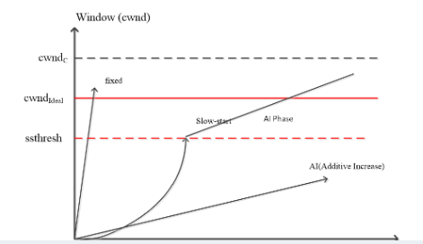
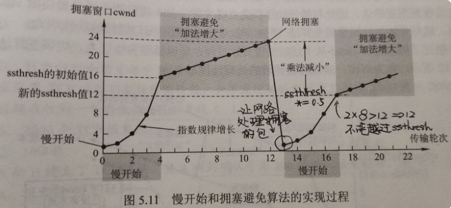
- 发送方的窗口大小需要考虑两方面因素
- 接收方缓冲区剩余大小，即协议中发回的 rwnd；
- 网络的拥塞情况，发送方应当根据拥塞情况维护一个拥塞窗口 cwnd。
- 发送方的窗口大小应取这二者之间的较小值。下面讨论 cwnd 的算法。
- 初始 cwnd 为 1（单位为 KB 或者 MSS, Maximum Segment Size）
- 每收到一个ACK,就增加一个数据包,也就是一个变两个[指数增长]

- 指数增长到小于等于 ssthresh（slow start threshold）后开始两者每次共同 +1[到达阈值之后转变为线性增长]最初，慢启动阈值被任意设置为较高的值，即流量控制窗口的大小，以便不会限制连接。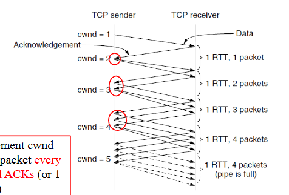
- 直到发现拥塞时(发现丢包) cwnd = 1, ssthresh *= 0.5,然后重新开始.
- 将 cwnd 置为 1 的考量是让网络迅速消化掉拥塞在网络中的数据包。
快重传和快恢复

- Duplicate ACKnowledgements重复确认
- 会提示数据未到达的情况.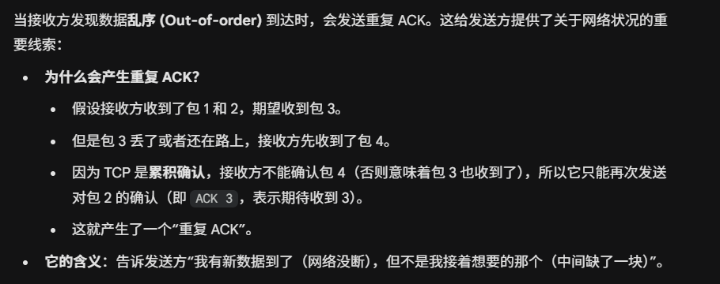
- 快重传[TCP Tahoe 版本]和快恢复[TCP Reno版本=TCP Tahoe+快恢复]是对前述算法的优化。
- 快速重传: 此时发送方可以不必等待超时而是一旦收到 3 个重复 ACK，发送方立刻重传 2 号 segment
- 慢启动阈值仍设置为当前拥塞窗口的一半。通过将拥塞窗口设置为一个数据包可以重新启动慢启动。
- 在快恢复算法中，我们发现 3 个冗余 ACK 时会采取 cwnd *= 0.5，ssthresh *= 0.5 的方式，而不是将 cwnd 置为 1。
- 对每个额外的重复确认继续发送一个新数据包（假装进一步的重复 ACK 是预期的 ACK）
- 为此，对重复 ACK 进行计数（包括触发快速重传的三个 ACK），直到网络中的数据包数量下降到新的阈值[下降到新阈值之前停止发送新数据包,下降到新阈值之后可以每收到一个重复确认就发送一个新的数据包]
- 当 ACK 跳跃时协调视图采取这一策略的考量是，既然发送方还能收到冗余的 ACK，那么说明网络还没那么拥塞。

- 当 ACK 跳跃时协调视图采取这一策略的考量是，既然发送方还能收到冗余的 ACK，那么说明网络还没那么拥塞。
- 快速重传之后的一个RTT,丢失的数据包将被确认,那么重复确认流停止,退出快速恢复模式.拥塞窗口将被设置为新的慢启动窗口并线性增长.
- TCP 避免使用慢启动，除非在连接首次启动时和发生超时时。
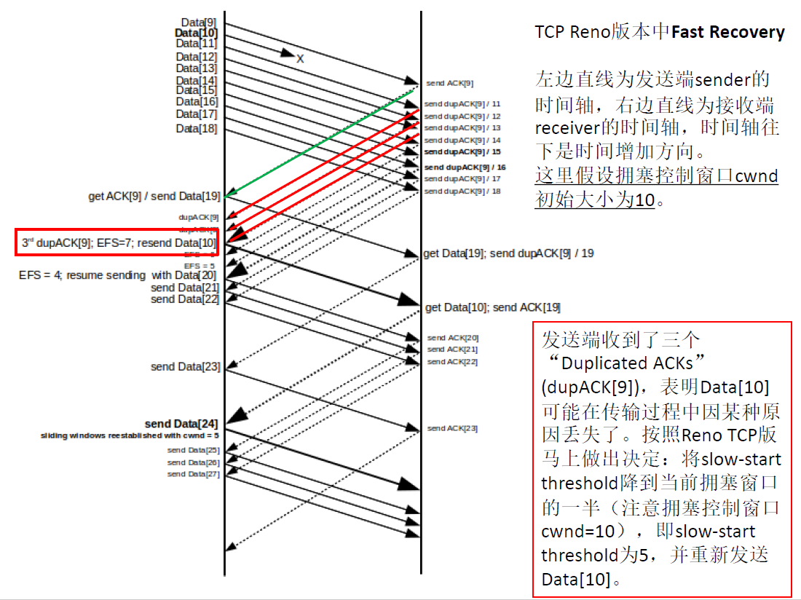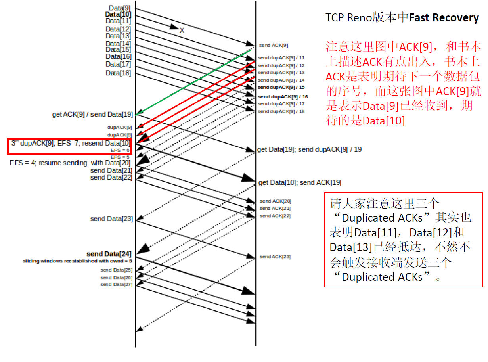 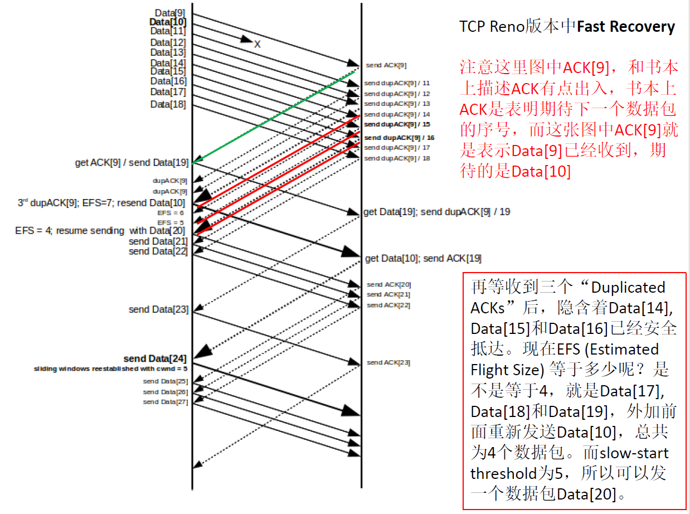
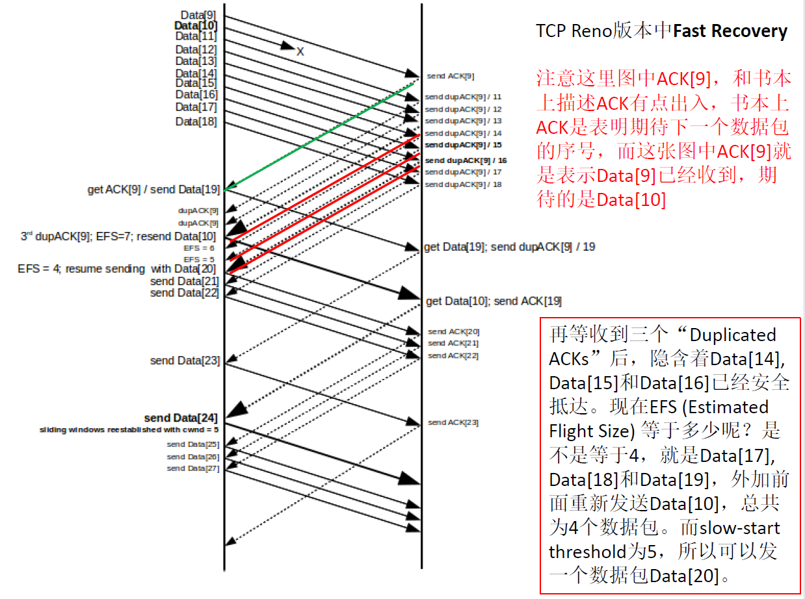
- 快速重传: 此时发送方可以不必等待超时而是一旦收到 3 个重复 ACK，发送方立刻重传 2 号 segment
其他
SACK (Selective ACKnowledgements):
- lists up to three ranges of bytes that have been received. With this information, the sender can more directly decide which packets to retransmit and track the packets in flight to implement the congestion window.
- With SACK, TCP can recover more easily from situations in which multiple packets are lost at roughly the same time, since the TCP sender knows which packets have not been received.
- [RFC2883 and RFC3517]
ECN (Explicit Congestion Notification)
- ECN is an IP layer mechanism to 通知主机网络拥塞情况
- The use of ECN is enabled for a TCP connection when both the sender and receiver indicate that they are capable of using ECN by setting theECE and CWR bits during the connection establishment.
- The TCP receiver uses the ECE (ECN-Echo) flag to signal the TCP sender to tell it to slow down when the TCP receiver gets a congestion indication from the network.
- The sender tells the receiver that it has heard the signal by using the CWR (Congestion Window Reduced) flag, so that the TCP receiver knows the sender has slowed down and can stop sending the ECN-Echo.
- If ECN is used, routers that support ECN will set a congestion signal on packets that can carry ECN flags when congestion is approaching, instead of dropping those packets after congestion has occurred.
- ECN requires both host and router support. [RFC 3168]
其他其他: bbr基于拥塞的拥塞控制
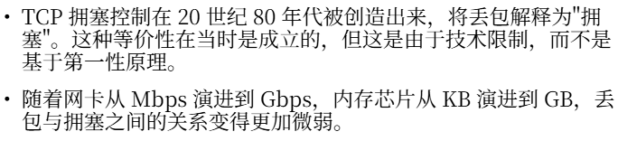
- 当瓶颈缓冲区很大时，基于丢包的拥塞控制会将其保持满满状态，导致缓冲区膨胀 buffer bloat。
- 延迟拥塞事件对发送方的影响（当长网络路径中的网络设备具有过大的缓冲区时，具有大拥塞窗口的 TCP 发送方可以以远超网络容量的速率发送数据，直到收到丢包信号才会做出反应）。
- 当瓶颈缓冲区较小时，基于丢包的拥塞控制会错误地将丢包解释为拥塞信号，导致吞吐量很低。
替代方案:
首先理解网络拥塞在何处产生以及如何产生
- 在任何时间，一条全双工 TCP 连接在每个方向上恰好有一条最慢的链路或瓶颈。
- 瓶颈决定了连接的最大数据传输速率
- 它是持久队列形成的地方
- 从 TCP 的角度来看，一条任意复杂的路径表现为具有相同 RTT 和瓶颈速率的单条链路。
- 两个物理约束，RTprop（往返传播延迟）和 BtlBw（瓶颈带宽）限制了传输性能。
- 如果网络路径是一条物理管道，RTprop 就是它的长度，BtlBW 就是它的最小直径。
- 两个物理约束，RTprop（往返传播延迟）和 BtlBw（瓶颈带宽）限制了传输性能。